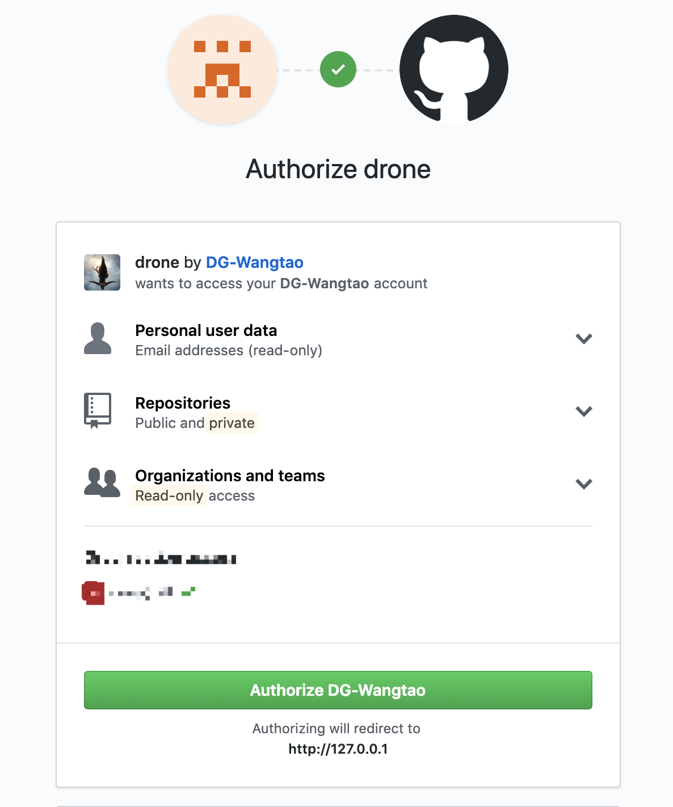

CI篇：安装与配置
CI/CD简介
CI全称为Continuous Integration，意为持续集成，是在源代码变更后自动检测、拉取、构建和进行自动化测试的过程，属于开发人员的自动化流程。该解决方案可以解决在一次开发中有太多应用分支，从而导致相互冲突的问题。其基本思路是，自动化监测代码仓库的变化并拉取最新代码、编译构建和自动化测试。CI的触发方式可分为以下三种：
- 轮训：按一定的时间间隔反复询问代码仓库是否发生了变更，若发生了变更则开启CI流程
- 定时：定期从代码仓库拉去最新代码并进行构建与测试，不必关心是否有变更发生
- 推送：当代码仓库发生变更时，通过推送的方式(如
webhook)通知CI进行任务，这需要CI环境被代码仓库访问到，因此需要一个外网可达地址
CD指的是持续交付(Continuous Delivery)或持续部署(Continuous Deployment)。持续交付通常是指开发人员对应用的更改会自动进行错误测试并上传到存储库（如 GitHub 或容器注册表），然后由运维团队将其部署到实时生产环境中。持续部署指的是自动将开发人员的更改从存储库发布到生产环境，它以持续交付为基础，实现了管道后续阶段的自动化。
CI/CD 既可能仅指持续集成和持续交付构成的关联环节，也可以指持续集成、持续交付和持续部署这三项构成的关联环节。
请参考：redhat：什么是CI/CD
Drone CI简介
Drone CI官网说：
Drone is a self-service Continuous Delivery platform for busy development teams.
相对于常见的Jenkins，选中 Drone的原因在于它非常简洁，不像Jenkins那样复杂，同时它拥有可以满足基本需求的能力，并且提供了许多实用的插件，如GitHub，Email，helm，微信，钉钉等
需要注意的是，drone 0.8版本和0.1版本差别较大，本文使用1.0版本
安装Drone CI - GitHub
drone文档给出了相对于不同git仓库和部署方式的方案，支持的git仓库有：

拿github来说，drone提供了以下部署方式：

本节给出对于GitHub的单机部署方案，对官方部署方案做了docker-compose方案的补充
设置GitHub OAuth Application
- 登陆你的github账户，在右上角点击个人头像，选择
Setting，选择Developer settings，选择OAuth Application，选择新建一个application，如下图：
- HomePage是DroneCI的访问地址，若是Drone由本地部署，那就可以设置为
http://127.0.0.1 - Authorization callback URL是DoneCI的登陆地址，格式必须是
/login，如http://127.0.0.1/login
- HomePage是DroneCI的访问地址，若是Drone由本地部署，那就可以设置为
- 创建成功以后，拿到
Client ID和Client Secret
下载安装docker和docker-compose
下载drone docker
1 | docker pull drone/drone:1.0.0-rc.6 |
启动drone server
docker 启动:
1
2
3
4
5
6
7
8
9
10
11
12
13
14
15
16docker run \
--volume=/var/run/docker.sock:/var/run/docker.sock \
--volume=/var/lib/drone:/data \
--env=DRONE_GITHUB_SERVER=https://github.com \
--env=DRONE_GITHUB_CLIENT_ID={% your-github-client-id %} \
--env=DRONE_GITHUB_CLIENT_SECRET={% your-github-client-secret %} \
--env=DRONE_RUNNER_CAPACITY=2 \
--env=DRONE_SERVER_HOST={% your-drone-server-host %} \
--env=DRONE_SERVER_PROTO={% your-drone-server-protocol %} \
--env=DRONE_TLS_AUTOCERT=true \
--publish=80:80 \
--publish=443:443 \
--restart=always \
--detach=true \
--name=drone \
drone/drone:1.0.0-rc.6docker-compse 启动
上面的启动命令是drone官方文档的方案，下面给出我使用的docker compose的方法创建
.env文件，这是docker-compose启动时默认读取的文件，用来设置环境变量1
2
3
4
5
6
DRONE_SERVER_HOST=127.0.0.1
DRONE_GITHUB_CLIENT_ID=XXXXXXXXXXXXXX
DRONE_GITHUB_CLIENT_SECRET=XXXXXXXXXX
DRONE_SERVER_PROTO=http
DRONE_SECRET_SECRET=ci-drone创建
docker-compose.yml文件1
2
3
4
5
6
7
8
9
10
11
12
13
14
15
16
17
18
19
20
21
22
23
24# drone server 部署
version: "2"
services:
drone-server:
image: drone/drone:1.0.0-rc.6
ports:
- 80:80
- 443:443
volumes:
- /var/run/docker.sock:/var/run/docker.sock
- /var/lib/drone:/data
restart: always
environment:
- DRONE_GITHUB_CLIENT_ID=${DRONE_GITHUB_CLIENT_ID}
- DRONE_GITHUB_CLIENT_SECRET=${DRONE_GITHUB_CLIENT_SECRET}
- DRONE_SERVER_PROTO=${DRONE_SERVER_PROTO}
- DRONE_SERVER_HOST=${DRONE_SERVER_HOST}
- DRONE_TLS_AUTOCERT=false
- DRONE_RUNNER_CAPACITY=8
- DRONE_DEBUG=false
- DRONE_LOGS_DEBUG=false
- DRONE_GIT_ALWAYS_AUTH=false
- DRONE_SECRET_SECRET=${DRONE_SECRET_SECRET}drone配置项说明
DRONE_GITHUB_CLIENT_ID: 在Github中创建OAuth Application时生成的Client IDDRONE_GITHUB_CLIENT_SECRET: 在Github中创建OAuth Application时生成的Client SecretDRONE_SERVER_PROTO: Drone提供服务的prototype，可选为http或httpsDRONE_SERVER_HOST: Drone的server地址，设置为127.0.0.1作为本地地址，也可以设置为外部可访问的域名或IP地址DRONE_TLS_AUTOCERT: 设置是否自动开启安全传输层协议，若设置为true，那么drone server proto会设置为使用https，DRONE_SERVER_PROTO设置为http也是无效DRONE_RUNNER_CAPACITY: drone提供服务的最大并行度DRONE_SECRET_SECRET: 可自由设置- Drone用到的端口号有：80和443
启动服务
1
docker-compose up
或者通过后台的方式运行：
1
docker-compose up -d
配置CI仓库
通过浏览器访问：http://127.0.0.1 ，浏览器会重定向到github登陆认证页面

使用github账户登陆之后，浏览器被重定向回drone，并被授权访问你的github仓库
选中你要配置的仓库，点击
ACTIVATE按钮，进入SETTINGS卡片，点击ACTIVATE按钮开启这个仓库.开启之后可以设置CI任务的基本配置。用过jenkins的人会发现，这个页面显然简洁一点。
此时，github仓库中会添加一条webhook地址，当github仓库发生改变时会通过webhook通知drone server。
不过，问题是这个webhook地址是DRONE_SERVER_HOST，如果配置为127.0.0.1或外网不可达时，这个webhook地址github是访问不到的。不过这不影响Cron Job的触发。配置里面有四个主要选项
Main: 主要配置
Project settings：设置是否开启仓库保护，若开启，那么每次触发CI自动编译都需要仓库管理员手动确认Project visibilty：设置仓库可见性，因为你设置的host地址所有人都可以访问到，并通过自己的github账户登陆，可见性可以保护你的仓库Configuration：设置CI任务的yaml配置文件，这里面制定了CI的所有流程，一般放在仓库根目录下，名为.drone.yaml，稍后会详细说明
Secrets：
如Drone Secret文档中所说，不方便明文存储到代码仓库里的密码值，可以通过Repository Secrets，Encrypted Secrets和External Secrets来存储
这里的Secrets设置可以指定Repository Secrets，在Secret Name中指定密码名称，Secret Value中设置该值。Allow Pull Requests是指，当是pull_request请求时这个密钥是否可被使用，因为其他人可能会通过pull request来触发CI，造成安全隐患。
在.drone.yaml中可以通过from_secret引用，如下面的username和password1
2
3
4
5
6
7
8
9
10
11kind: pipeline
name: default
steps:
- name: build
image: alpine
environment:
USERNAME:
from_secret: username
PASSWORD:
from_secret: passwordCron Jobs：定时任务
这里可以通过任务名称，分支名称和时间指定定期的CI任务。前文提到，CI触发有三种规则轮训，定期和推送。
注：但这里的定期任务稍微有点怪，cron job的执行逻辑是定期触发一次检查，事件是指定分支的最后一次事件，执行的pipline会验证trigger规则，不像是通常说的定期任务，也不能说是轮训，因为轮训是监测是否有新事件。Badges：编译状态图标
这里提供了CI运行的状态图标，可以放到Git仓库里作为编译状态。不过Drone server的地址就不能简单的设置为127.0.0.1了，因为Github访问不到，需要一个外网IP或域名
.drone.yaml文件声明CI过程
Drone通过Pipline的方式来声明CI的执行过程，如文档所示。
1 | kind: pipeline |
- steps指定CI执行的步骤，默认pipline或创建一个叫做
clone的步骤，它是从git仓库克隆代码大步骤 - 多个step之间可以通过
depends_on来指定执行顺序，比如先clone，后build，然后deploy - 同一个
pipline下的多steps之间默认是串行的，实现方式应该是下面的stepdepends_on紧邻的上一个step - 多
pipline之间是并行的，同一个yaml文件里使用---分割多个pipline的定义 - triggers是指在什么情况下才会执行ICI任务，比如只对
master分支的pull request和push事件触发 在每一个
step中，可以通过Conditions来指定在CI过程中是否执行该step，通过when关键字指定。trriger是指定pipline何时被执行，condition指定pipline中的step是否被执行，如：1
2
3
4
5
6
7
8
9
10
11
12
13kind: pipeline
name: default
steps:
- name: build
image: golang
commands:
- go build
- go test
when:
branch:
- master
- feature/*
配置完成
- 若是配置了
Cron Job，那到到该时间点时，会触发CI的任务，此时pipline中的trigger规则会失效 - 配置Drone CI之后，Github的check功能也会被启用，对每一次
event都会监控CI的状态
注：
- 使用Drone 1.0，与0.8版本差异较大
- 当刚绑定仓库之后，Drone无法手动触发CI
- 当
trigger中指定event为pull_request时，使用的分支为target branch；当trigger中指定event为tag时，指定的branch规则是无效的 Project settings设置为Protected后，每次CI任务都要手动确定- 关于gitlab、私有 docker 镜像、dns设置，在下一篇继续说